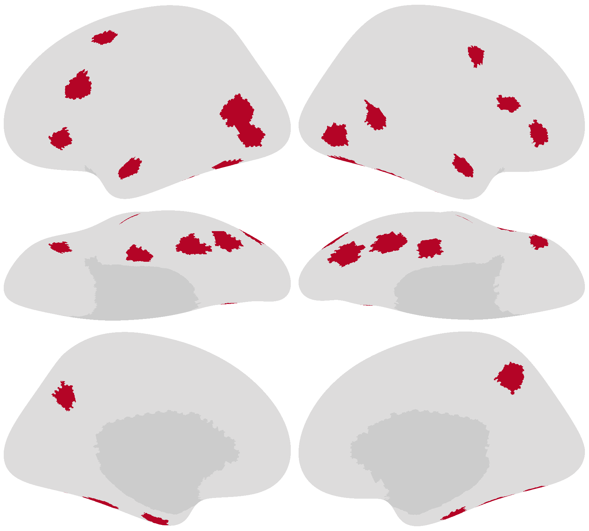

Visualizing searchlights
Contents
Visualizing searchlights¶
This example shows how to get the searchlights using get_searchlights and visualize them on cortical surface using brainplotlib’s brain_plot.
These visualized searchlights are the face regions used in our recent preprint (Jiahui et al. [2022]).
In this example, each faces region is defined as a searchlight with a 10 mm radius.
We render vertices in face regions in one color and other cortical vertices in another color.
Note that searchlights are defined as disks on a cortical surface (the “midthickness” surface in this case). When searchlights are visualized on an inflated surface, such as in the example below, the shape may look somewhat different due to inflation.

import numpy as np
from searchlights import get_searchlights
from brainplotlib import brain_plot
lh_indices = np.array([3026, 9254, 9243, 1267, 2900, 3007, 3660, 7945, 4585, 3523])
rh_indices = np.array([7832, 142, 2519, 9123, 8793, 9336, 1467, 1478, 7001, 5321])
areas = ['OFA', 'aFFA', 'pFFA', 'ATL', 'pSTS', 'aSTS', 'sIFG', 'mIFG', 'iIFG', 'precuneus']
values = []
for lr, center_indices in zip('lr', [lh_indices, rh_indices]):
nv = {'l': 9372, 'r': 9370}[lr]
v = np.zeros((nv, ))
sls = get_searchlights(lr, 10, 'fsaverage')
for center in center_indices:
sl = sls[center]
v[sl] = 1
values.append(v)
img = brain_plot(values, vmax=1, vmin=-1, cmap='coolwarm')
from PIL import Image
im = Image.fromarray(
np.round(img * 255).astype(np.uint8))
im.save('face_ROIs.png')
References¶
- 1
Guo Jiahui, Ma Feilong, Matteo Visconti di Oleggio Castello, Samuel A. Nastase, James V. Haxby, and M. Ida Gobbini. Modeling naturalistic face processing in humans with deep convolutional neural networks. bioRxiv, 2022. doi:10.1101/2021.11.17.469009.